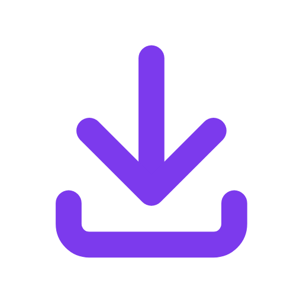

downex
v0.0.0
Connected
Dashboard
Checking 127.0.0.1:18888...
Download Status
Operation state details
Download via Browser
✕
New Extension Version (
v0.0.1
)
Hot Reload
Downex Desktop Required
Install the Downex desktop application on your PC to enable high-speed downloads and video stream sniffing.
Download Downex for Windows (.exe)
v0.0.0 Immutable Base Setup • download.gauravpatil.site
Start Downex Desktop App
Launch background service on 127.0.0.1:18888
Already installed?
Check Connection
Bridge Endpoint
127.0.0.1:18888
Engine Status
Offline
Extension
v0.0.0 Base
Quick Add
Streams
0
Settings
Quick Capture
Probing...
✕
Downloads\Downex\
Later
Start Download
Active Tab Streams
Video ON
No active media stream detected on this tab.
Play a video or run deep scan below.
Deep Scan Tab for All Media & Links
All
Media
Archives
Docs
Download Selected Links
Video & Stream Grabber
Sniff DASH, HLS & MP4 streams on players
In-Player Overlay Pill
Attach floating download button on video players
Toolbar Quality Badge
Show stream resolution (HD/4K) on icon
Auto-Capture Downloads
Catch browser files (.zip, .exe, .iso, etc.)
Alt-Key Quick Bypass
Hold Alt while clicking to skip Downex